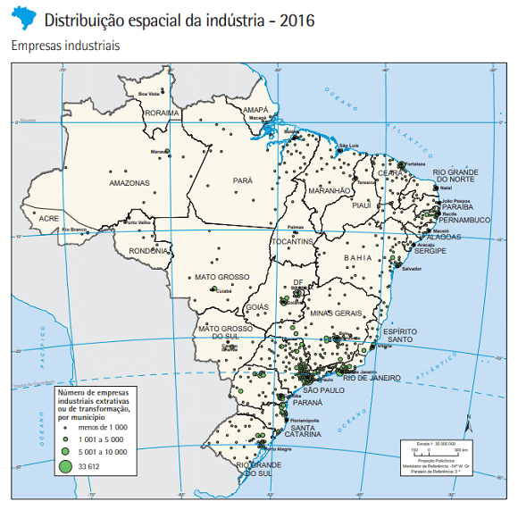
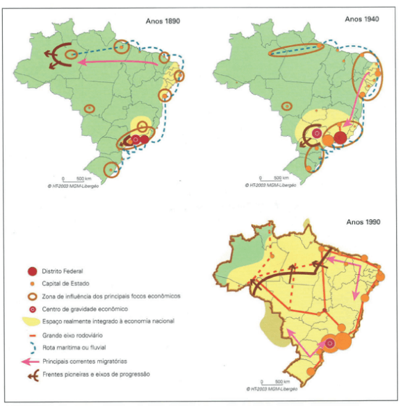
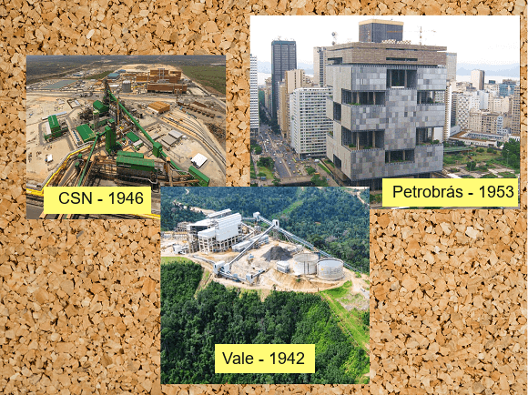

Conteúdo: Indústria; Economia Agroexportadora; Substituição de importações; Economia
Urbano-Industrial; Modernização periférica; Endividamento externo.
Objetivo: Entender o processo de industrialização do Brasil. Identificar os agentes, as
características da transição da economia agroexportadora para a urbano-industrial, a integração do
território nacional e sua configuração desigual.
Digite seu nome
Introdução
Na aula anterior, vimos o potencial do território brasileiro em relação
aos recursos minerais presentes no país.
Hoje, veremos como esse território foi transformado através da industrialização no Brasil.
Você entrará em contato com os fatores e o processo de industrialização brasileiro ao logo do tempo e do
espaço.
Questões para serem respondidas no caderno sobre o tema da aula de hoje:
1) O que é a indústria?
2) Qual é a contribuição do setor industrial para o PIB brasileiro?
3) Por que a distribuição das indústrias é concentrada na região Sudeste do Brasil?
4) Quais são os tipos de indústrias mencionadas no texto?
5) Como o modelo agrário-exportador impactou a industrialização no Brasil?
6) Qual evento econômico levou à falência de muitos fazendeiros no Brasil em 1929?
7) O que foi a Política de Substituição de Importações?
8) Quais grandes empresas públicas foram criadas pelo governo de Getúlio Vargas?
9) Como Juscelino Kubitschek contribuiu para a industrialização no Brasil?
10) Qual foi o impacto do regime militar no endividamento externo do Brasil?
O que é uma indústria?
O nome indústria pode ser sinônimo de transformação. Ela modifica matérias-primas, como o minério de ferro,
e o transforma em um produto comercializável e pronto para o uso, a exemplo do aço.
No Brasil, o segmento industrial representa cerca de 20% do Produto Interno Bruto – PIB e representa quase
70% das exportações brasileiras de bens e serviços. É um setor que emprega 9,7 milhões de trabalhadores e
possui uma média salarial de cerca de 5.887 reais para ensino superior e 2.128 reais para nível médio (CNI,
2022).
Qualquer mapa do Brasil nos induz a questão sobre qual a razão da distribuição das indústrias ser tão
concentrada na região Sudeste?

Fonte: IBGE (2016).
Primeiro, vamos ver algumas características das indústrias no geral e depois no Brasil. Existem muitas
classificações para diferentes tipos de indústrias, como aquelas que produzem produtos para outras
indústrias, a exemplo da petroquímica ao refinar o petróleo, siderúrgica ao produzir metal, e a produção de
máquinas e equipamentos. Estas serias as indústrias de bens de produção ou bens de
capital.
Há, igualmente, indústrias que produzem produtos que duram bastante, como carros, eletrodomésticos ou
produtos de informática. Essas são as indústrias de bens duráveis. Assim como há aquelas que produzem
alimentos, bebidas, cosméticos, remédios, são indústrias de bens não-duráveis.
Desde o seu início na Primeira Revolução Industrial, no fim do século XVIII e início do século XIX, na
Inglaterra, utilizando para isto força humana, máquinas e energia, o processo de industrialização passou por
diversas etapas, como a fase artesanal, com pouca divisão do trabalho e mais focada no
trabalho do artesão; depois a fase Manufatureira, com alguma divisão do trabalho e
introdução de máquinas simples; até a fase moderna com a presença de tecnologia avançada
como robotização e informática. O Brasil também teve seu histórico particular nesse processo de
industrialização, que marcou e ainda marca seu território ainda hoje.
Economia agroexportadora
O Brasil viveu séculos como um país eminentemente agrário, com uma economia agrária voltada para o comércio
externo. Iniciada no século XVI com a colonização promovida pelos portugueses com o objetivo de exportar
riquezas para a Europa, formando uma elite ligada às grandes propriedades de terra, ao trabalho escravo e a
exportação de bens primários, como cana-de-açúcar e do algodão no Nordeste e extração do látex na Amazônia.
Esse modelo agrário-exportador imposto pelos colonizadores durante mais de três séculos foi um dos fatores
impeditivos para o desenvolvimento da atividade manufatureira no Brasil, conforme texto abaixo:
"O obstáculo definitivo para a indústria no Brasil foi a produção de gêneros agrícolas em alta escala
para o exterior, molda do sistema colonial. Constitua-se a grande empresa, trabalhada pelo escravo no
latifúndio. As propriedades territoriais eram entidades autónomas, isoladas umas das outras. De
exigências modestas, dispensavam intercâmbio. O básico é obtido no mundo rural. A autossuficiência
significa falta de diversificação do mercado. A ausência de transportes dificulta o relacionamento. Sem
mercado interno não há necessidade de mais: A estrutura da propriedade rural explica a falta de núcleos
urbanos expressivos [...] O trinômio monocultura, latifúndio e escravidão é incompatível com o esforço
manufatureiro. [...]"
(IGLESIAS Fernando. A industrialização brasileira. São Paulo:
Brasiliense, 1985, p. 20-27.).
Como visto, o território foi organizado para ser um arquipélago econômico. Arquipélago é um substantivo
coletivo para um conjunto de ilhas. Nesse caso, o Brasil foi marcado para possuir algumas “ilhas” de
produção sem comunicação entre si com transporte deficiente em benefício do colonizador europeu.
A atividade industrial, portanto, só iria se iniciar no final do século XIX, com o surgimento de indústrias
voltada para a produção de bens de consumo duráveis, como tecidos, roupas, calçados, alimentos e bebidas.
Antes tudo isso era importado da metrópole portuguesa.
Isso porque com a mão de obra escrava, não havia um mercado consumidor amplo. Além disso, os principais
dirigentes do país à época estavam ligados as oligarquias agrárias, que não tinham muito interesse nos
investimentos em atividades urbanas.
Nessa época, mais um ciclo econômico surgiu com o Café e com ele uma grande acumulação de capital, riqueza e
poder. Uma elite de cafeicultores paulistas comandavam o cenário político na era recente da primeira
república. Dessa forma, o Brasil ingressou no século XX ocupando uma posição de nação agroexportadora na
Divisão Internacional do Trabalho.
Esse cenário que parecia imutável por séculos, começou a se modificar com a vinda dos imigrantes a partir de
1850 e com o fim da escravidão e o surgimento do trabalho assalariado, o qual gerou uma mercado consumidor
ainda pouco expressivo.
Por que a indústria ficou concentrada no Sudeste?
Há vários fatores naturais, técnicos e políticos para o predomínio de São Paulo e Rio de Janeiro como
regiões pioneiras do processo de industrialização. Sabemos que o Brasil era essencialmente agrário até o
final do século XIX, vejamos como os mapas representam esse cenário:

Fonte: FRANK (2018).
Pelos mapas, vemos, dentre outras coisas, que o território era desarticulado até por volta de 1940 e
depois ocorre uma expansão da integração nacional sob o comando do Sudeste. Por que ocorreu isso? Alguns
fatos explicam essa configuração territorial:
disponibilidade de capital fornecido pela cafeicultura: presença de bancos e de uma estrutura
comercial:
energia elétrica (as duas cidades, São Paulo e Rio de Janeiro, receberam eletrificação entre os anos
de 1889 e 1905): implantação de uma rede ferroviária eficiente.
mão-de-obra fornecida por imigrantes europeus.
O mercado consumidor, porque o dinheiro do café havia se concentrado no Sudeste, formando uma elite
econômica e uma crescente classe média que vivia em ambas as cidades.
o papel do solo, marcado pelo derrabe basáltico e do clima tropical de altitude em grande parte.
Os censos indústrias da época demonstram essa hegemonia do Sudeste. Um levantamento feito em 1920 revela que,
do total da produção industrial brasileira na época, 65.3% concentravam-se na região. São Paulo detinha
31.5% das indústrias, o Rio de Janeiro, então capital do país, contava com 28,2% dos estabelecimentos
industriais, e Minas Gerais abrigava 5.69% do total.
As três primeiras décadas do século XX foram marcadas por algum crescimento industrial no Brasil graças à
disponibilidade de capital oriundo da cafeicultura, à expansão urbana, a chegada das ferrovias, entre outros
fatores. Por isso, o processo de industrialização brasileiro é considerado tardio, porque ocorreu
efetivamente mais de cem anos depois da Revolução Industrial, iniciada na Inglaterra no século XVIII e que
prosseguiu em diferentes países europeus e nos Estados Unidos. Dessa forma, o país tornou-se profundamente
dependente dessas nações em termos econômicos e tecnológicos.
Em 1929, ocorreu a quebra da Bolsa de Nova York, que levou as exportações de café brasileiro a um quadro
caótico, sem precedentes, e resultou na falência de inúmeros fazendeiros. Nesse contexto de dificuldades
econômicas, Getúlio Vargas ascendeu ao poder, com a vitória da Revolução de 30. Com a crise, o modelo
político e econômico precisava mudar.
A Política de substituição de importações
A Política econômica de substituição de importações objetivava produzir internamente tudo aquilo que antes
era importado a fim de fomentar a indústria nacional.
Alguns fatores importantes foram fundamentais para o desenvolvimento da indústria no Brasil. O primeiro foi a
ascensão do governo de Getúlio Vargas (1930-45), que promoveu a destituição da oligarquia agroexportadora
que dominou a vida política e econômica do Brasil dura a primeira fase da República (1889-1930).
Do ponto de vista econômico, o referencial teórico que fundamentava as decisões do governo estava ligado à
intervenção do Estado na economia, aliado a um sentimento nacionalista.
A partir disso, o governo criou grandes empresas públicas consideradas estratégicas para o avanço da
indústria: A Companhia Vale do Rio Doce – atual Vale -, criada em 1942, para atuar na exploração de minério
de ferro, em Minas Gerais, na área do Quadrilátero ferrífero; a Companhia Siderúrgica Nacional – CSN -,
inaugurada em 1946, no município de Volta Redonda, no Estado do Rio de Janeiro; e a Petrobrás, fundada em
1953, uma empresa ligada à pesquisa e prospecção de petróleo, no segundo mandato do governo Vargas. E o
Banco Nacional de Desenvolvimento Econômico e Social – BNDES encarregado por financiar os investimentos a
longo prazo dessas infraestruturas.

Fonte: Organizado pelo autor.
Para criar as condições para que a indústria se expandisse no Brasil e pudesse atender à demanda interna, o
Estado passou a facilitar a importação de máquinas e equipamentos, mas restringiu, por outro lado, a
importação de produtos industrializados.
Economia urbano-industrial
A transição de uma economia agroexportadora em direção à economia urbano-industrial ocorreu através da
abertura ao capital estrangeiro.
Essa transição ocorreu a partir da década de 1950, com o Plano de Metas de Juscelino
Kubitschek, após o acúmulo de capitais derivados da política de substituições de importação e com o avanço
da internacionalização da economia, o país consolidava o modelo de consumo, o crescimento das cidades e das
indústrias. Lembra que foi JK quem transferiu a capital federal do Rio de Janeiro para Brasília buscando
promover à ocupação do interior do território.
A industrialização deveria ser alcançada a qualquer custo, do jeito que fosse possível, amparado nas elites,
nos intelectuais e no povo, formou-se uma política submissa aos interesses das grandes empresas
estrangeiras. Foi no governo de Juscelino Kubitschek, (1956-1960), que esse modelo se instaurou através do
tripé econômico: capital privado nacional, capital privado internacional (as multinacionais) e intervenção
do Estado.
Dessa forma, o processo de industrialização do país ingressou em uma nova fase, marcada pela crescente
presença de empresas multinacionais, voltadas principalmente para a produção de bens de consumo duráveis,
como automóveis, eletrodomésticos, transportes, comunicações etc.
O Brasil, diante desse cenário, é caracterizado como uma país de industrialização tardia, tendo em vista que
seu processo de industrialização se concretizou após quase dois séculos do início da Revolução Industrial na
Europa.
O período militar e o endividamento externo
A partir de 1950, o Brasil ainda era um país pouco industrializado, e o dinheiro para realizar diversas obras
como indústrias de aço, hidrelétricas, estradas, dentre outras, vieram de empréstimos internacionais,
agravados pelas crises seguintes de 1980 e 1990.
Após JK, o governo no Brasil entrou em um período conturbado, com a renúncia de Jânio Quadros e com o
governo de João Goulart (1961-64) que perdurou até o golpe de Estado de 1964.
Com o regime militar houve um grande aumento do endividamento do país de cerca de 3,7 bilhões de dívida
externa no início do regime e de aproximadamente 95 bilhões ao término desse período em 1985. O PIB do
Brasil passou de 43º no mundo para 9º. O país cresceu muito nesse tempo, mas com consequências sociais e
políticas.
O parque industrial se desenvolveu de forma significativa e a infraestrutura de transportes, energia e
telecomunicações se modernizou.
O capital estrangeiro entrou em vários setores da economia, principalmente na extração de minerais metálicos
em Carajás, Trombetas e Jari; nas indústrias químicas e farmacêuticas e na fabricação de bens de capital
utilizados pelas indústrias de bens de consumo.
Esse período é conhecido pelos historiadores como “Milagre econômico”, com crescimento elevado do PIB, mas
também com a diminuição do poder de compra por parte dos trabalhadores.
Com a crise do petróleo, dentre outras, no final da década, os investimentos externos foram reduzidos e a
economia brasileira teve de arcar com o pagamento dos juros da dívida externa.
O lema era exportar a qualquer custo e na busca por superávit,
o país aumentou os impostos de importação e, assim, reduziu a competitividade do parque industrial
brasileiro diante do exterior ao longo dos anos 1980.
×
Em economia ou contabilidade nacional, quando há uma diferença positiva entre receita e despesa
na balança comercial de um país, esta passa a ser superavitária, sobrando, ao país, capital para
ser reinvestido no seu sistema financeiro.
Na próxima aula vamos conhecer o que ocorreu com a indústria no Brasil no período de abertura econômica e
desconcentração industrial.
Saiba mais!
Depois da tempestade, vem o “milagre”
Do ponto de vista da industrialização brasileira propriamente dita, o golpe de 1964 não trouxe nenhuma
mudança nos rumos por ela tomada desde 1955. Muito pelo contrário, o papel da ditadura militar foi o de
consolidar o modelo econômico implantado nos anos 1950, aperfeiçoando-o. Logo, a primeira característica
da industrialização brasileira dessa época foi a permanência das diretrizes estabelecidas pelo Plano de
Metas, mantendo-se o tripé inaugurado nos anos 1950 a pleno vapor.
A história da economia e da industrialização brasileiras do pós-64 pode ser dividida em três períodos: a)
1962-1967 – fase caracteriza como de crise e recessão; b) 1968-1974 –
fase de retomada do crescimento industrial, vulgarmente conhecida como “milagre econômico brasileiro”,
em virtude das elevadas taxas de crescimento de nossa economia; c) de 1974 até o presente
(1992) – fase em que o “milagre” entrou em total e completo declínio, sem que as várias
saídas tentadas tenham conseguido grande sucesso.
Teste seu conhecimento
O modelo de industrialização brasileira é considerado:
Teste seu conhecimento
Na era Vargas e com a economia fortemente intervencionista, a industrialização brasileira baseou-se na:
Teste seu conhecimento
No governo JK, o aspecto central da industrialização brasileira pode ser destacada a partir do(a):
Não existe pergunta boba! A Ciência é feita de perguntas!
P:
Por que se fala que a industrialização do Brasil foi dependente?
R:
A teoria da dependência surgiu após o esgotamento da teoria da substituição das importações na era JK, com a entrada de indústrias automotivas internacionais, dentre outras. Essa teoria diz que o subdesenvolvimento dos países como o Brasil, México, África do Sul etc. além do processo de colonização era também resultado do interesse do centro do capitalismo e das elites do próprio país em manter esses países produzindo bens primários. A ideia é a de que os países subdesenvolvidos, porém industrializados como o Brasil, não estão no mesmo patamar de igualdade com os países desenvolvidos, onde fornecem matérias-primas e recebem produtos industrializados, criando uma relação de dependência.
P:
Quais são as fórmulas econômicas mais utilizadas para industrializar um país?
R:
Existem diversas formas de teorizar e aplicar uma fórmula econômica, a depender das regras do sistema proposto. No sistema capitalista, as variáveis giram, grosso modo, em torno do lucro e do trabalho assalariado e pela lei de oferta e procura. Dentro desse sistema, temos, de modo geral, grandes formas e suas variações que englobam várias visões de mundo sobre o que seria um bom caminho para a economia e, consequentemente, para a industrialização. Temos a forma da economia neoliberal e a economia desenvolvimentista.
A forma neoliberal baseia-se na suposição de que o mecanismo de preços deveria ser respeitado como o fator determinante da economia. Isso significa que o Estado controlaria o mínimo possível as medidas fiscais e monetárias, por exemplo.
Por outro lado, temos a visão desenvolvimentista nacionalista, como a de Vargas, O Estado interviria mais diretamente por meio de empresas estatais e das empresas de economia mista, como o Banco do Brasil, no sentido de assegurar as áreas que deveriam receber investimentos.
P:
Qual a posição do Brasil perante os outros países do Mundo?
R:
Essa questão remete à Divisão Internacional do Trabalho (DIT), que busca entender como são caracterizados o conjunto de países de acordo com a produção industrial, dentre outras coisas.
Até a década de 1960, a velha DIT se referia aos países do Norte como os responsáveis pelo fornecimento de produtos industrializados e os do Sul, pelos produtos primários, como minérios e produtos agrícolas. Com o passar do tempo, surgiram países, como o Brasil, México e Coréia do Sul, Hong Kong, Taiwan, Singapura, Índia, etc. que reorganizaram seu espaço produtivo e foram caracterizados de Países recentemente industrializados.
Alguns desses países favorecem a entrada de multinacionais em seu território e melhoraram suas exportações. Outros investiram em bens de capital como o Brasil e em infraestrutura. O importante é lembrar que a análise sobre um país está intimamente ligada aos interesses do capitalismo mundial, dos governos locais, dos fatores naturais e das características próprias de cada povo com seu território, não se trata de simples comparação entre um país e outro, pois há história e geografias diferentes entre cada país no mundo.
Desafio - Jornada do herói: A Travessia do Primeiro Limiar
Na aula passada, vimos A Travessia do Primeiro Limiar, que é o momento (sem volta) que o herói se
compromete com sua jornada.
Agora, vamos conhecer os Testes, Aliados e Inimigos, quando o herói entra por completo no Mundo Especial
misterioso e excitante, onde ele deve sobreviver a uma sucessão de provações.
Como sempre, formem seus grupos e use a criatividade para lidar com esse desafio.
Instruções
Forme um grupo com 5-6 estudantes;
Leia o texto abaixo e discuta com seu grupo o conteúdo das questões;
Faça anotações em seu caderno;
Seja criativo, use os conhecimentos que você já possui sobre o Desafio.
Tempo da atividade: 25 minutos.
Testes, Aliados, Inimigos (6)
Independente da experiência pregressa do herói, ele se encontra agora em um novo mundo do qual ele não
domina suas regras básicas. Veja o texto a seguir:
Leia a passagem abaixo:
“Nós, os Buscadores, estamos em estado de choque - este mundo é tão diferente de tudo o que sempre
conhecemos... Não apenas o terreno e os habitantes locais são diferentes, mas as regras deste lugar
são as mais estranhas que se possa imaginar. Aqui, se valorizam coisas diferentes, e temos muito o
que aprender sobre a moeda local, os costumes, a linguagem. Criaturas estranhas saltam em cima de
você! Pense rápido! Não coma isso, pode ser veneno!
Exaustos pela jornada através da desolada zona do Limiar, sentimo-nos sem tempo e sem energia.
Lembremos que nossa gente, lá na Nossa Tribo, conta conosco. Não estamos aqui para fazer turismo,
temos que nos concentrar na nossa meta. Temos que ir para onde haja comida e informação, chegar ao
lugar onde se joga o jogo. E lá que nossa capacidade será testada. Vamos nos aproximar do que
buscamos”.
Contraste
As primeiras impressões que o público deve ter do Mundo Especial é o seu contraste com o Mundo Comum. O
Mundo especial pode ser encarado no sentido figurado, ou seja, metaforicamente. Quando um adolescente
vai ingressar na vida adulta ou quando um príncipe decide não seguir os ditames da família real para ser
o novo rei.
Também pode existir um limiar físico como quando um submarino mergulha em outra região, ou um trem parte
para alguma estação e até mesmo quando uma nave espacial deixa a Terra e passa a conviver com um outro
mundo com regras diferentes.
Na construção da história do nosso jogo podemos utilizar esses recursos para ajudar nosso herói a atingir
seu objetivo.
Testes
A função mais importante desse período de adaptação ao Mundo Especial são os testes. O herói é desafiado
a cumprir tarefas, aparentemente impossíveis, e junto com os aliados enfrentam esses obstáculos. Uma
experiência em uma prova final para universidade ou a entrada em uma indústria para recuperar um
artefato importante. São tarefas que irão preparar os heróis para atividades mais perigosas que ainda
estão por vir.
Os testes podem ser uma continuação do treinamento do Mentor. Eles podem acompanhar os heróis até esse
ponto da jornada, fornecendo instruções necessários para os grandes embates que se aproximam.
Os testes do Mundo Especial procuram fazer com que o heróis caia em armadilhas, geralmente arquitetado por
uma vilão.
Aliados
Os heróis podem entrar no estágio dos testes procurando informações, mas podem sair com novos amigos e
aliados. Kratos, em God of War Ragnarok, possui aliados como os anões, Freya e a cabeça Mimir,
após ter libertado esse último de um feitiço de Odin. Podemos dizer que Mimir é um companheiro, pois
possui um vínculo duradouro para o desenrolar da história no jogo.
Os aliados podem dar um alívio cômico as vezes, além de prestarem assistência ao herói.
Equipes
O estágio dos testes também dá oportunidade para se formarem equipes, como nos jogos da Marvel ou Star
Wars, tanto o jogo como os filmes. Uma equipe pode ser recrutada para ajudar os heróis ou para continuar
sua jornada, a exemplo do jogo Gotham Knights com personagens como Batgirls, Capuz vermelho,
Asa noturna e Robin.
Inimigos
Os heróis também podem fazer inimizades neste estágio. O aparecimento do herói no Mundo Especial pode
chamar à atenção do Vilão e, assim, desencadear uma série de eventos. Como o conflito de Hans Solo e Luke
Skywalker e o vilão Jabba em Stars Wars ou Kratos versus Thor. As inimizades incluem os capangas, o
Guardião do Limiar, dentre outros.
Rival
Um tipo especial de inimigo é o Rival. Ele não quer destruir o herói, mas vai competir com ele em todas
as oportunidades.
Novas regras
O herói e o público têm que aprender rapidamente as novas regras do Mundo Especial. É muito comum nesse
ponto nos filmes ou nos jogos que o herói entra em uma cidade ou bar e ele aprende como funciona o
lugar.
O herói pode entrar em um bar e descobrir que a cidade está totalmente polarizada entre duas facções,
criadores de gado contra povos tradicionais, conservacionista contra destruidores do meio ambiente,
dentre outros.
O bar pode ser um microcosmo do Mundo Especial, onde o herói pode sentir o que está por vir, fazer amigos
e, sobretudo, inimigos, tal como em Red Dead Redemption 2 na figura de Arthur Morgan, que
precisa lidar com o declínio do Velho Oeste e sobreviver à perseguição de forças governamentais.
Com a ajuda dos aliados, o herói está pronto para se aproximar da Caverna Oculta que o aguarda. Tema da
próxima aula.
Questões para pensar na história do jogo:
- Em que o Mundo Especial da sua história é diferente do Mundo Comum? Como você pode aumentar esse
contraste?
- De que modo o herói é testado? Como faz Aliados e Inimigos? As necessidades da história é que
ditam quando é conveniente fazer alianças.
- Como seu herói reage ao Mundo Especial, com suas regras estranhas e pessoas diferentes?
- Seu herói é um personagem solitário ou participa de um grupo, uma família ou turma?
FRANK, Bruno José Rodrigues. Geografia econômica. Londrina: Editora e Distribuidora
Educacional S.A., 2018.
SANTOS, Patrícia Cardoso dos (et al.). Enciclopédia do Estudante: geografia do Brasil:
aspectos físicos, econômicos e sociais. São Paulo: Moderna, 2008.
VESENTINI, José William. Geografia: o mundo em transição. Ensino médio. 2. ed. – São
Paulo: Ática, 2013.
VOGLER, Christopher. A jornada do escritor: estruturas míticas para escritores.
Tradução de
Ana Maria Machado. -
2.ed. Rio de Janeiro: Nova Fronteira, 2006.
SKOLNICK, Evan. Video game storytelling: what every developer needs to know about
narrative
techniques.New Yoirk: Watson-Guptill, 2014.